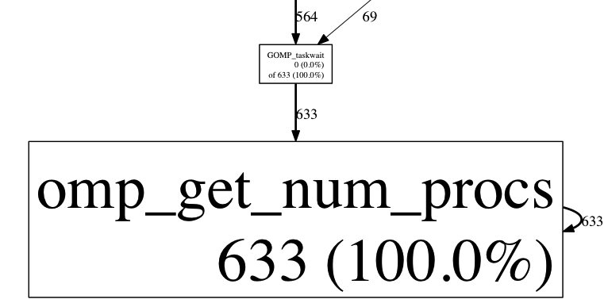

I was advising some students in
15-418, a parallel computer
architecture and programming course at CMU. They were attempting to make a
multithreaded puzzle solver using OpenMP and had some difficulty using the CPU
profiler from Google perftools.
Basically, the profiler kept reporting that omp_get_num_procs was taking a
huge portion of the program:
$ pprof --text solver out.prof Using local file solver. Using local file out.prof. Removing _L_unlock_16 from all stack traces. Total: 1382 samples 633 45.8% 45.8% 633 45.8% omp_get_num_procs 283 20.5% 66.3% 283 20.5% is_complete_row 226 16.4% 82.6% 226 16.4% partial_check_col 102 7.4% 90.0% 744 53.8% backtrack_row_solve 42 3.0% 93.1% 85 6.2% partial_check_row 41 3.0% 96.0% 351 25.4% partial_check 26 1.9% 97.9% 292 21.1% complete_and_check_puzzle 25 1.8% 99.7% 25 1.8% is_complete_col 3 0.2% 99.9% 749 54.2% _Z28backtrack_row_solve_paralleliiiPiPS_S0_._omp_fn.0 1 0.1% 100.0% 1328 96.1% GOMP_taskwait 0 0.0% 100.0% 1 0.1% GOMP_loop_dynamic_start 0 0.0% 100.0% 1258 91.0% __clone 0 0.0% 100.0% 124 9.0% __libc_start_main 0 0.0% 100.0% 124 9.0% _start 0 0.0% 100.0% 124 9.0% backtrack_row_solve_parallel 0 0.0% 100.0% 124 9.0% backtrack_solve 0 0.0% 100.0% 124 9.0% main 0 0.0% 100.0% 124 9.0% solve 0 0.0% 100.0% 1258 91.0% start_thread
This was clearly not right, so I spent some time digging around. If we look at
the callgraph to find which functions call omp_get_num_procs, we see that the
culprit is GOMP_taskwait:
$ pprof --gv --focus=omp_get_num_procs solver out.prof

We cannot view annotated source for this function (since we don't have source), but we can look at the annotated disassembly.
$ pprof --disas=GOMP_taskwait solver out.prof ROUTINE ====================== GOMP_taskwait 1 1330 samples (flat, cumulative) 96.2% of total ... <snip> ... . 16 84ef: callq 9ca0 <omp_get_num_procs+0x540> . . 84f4: nopl 0x0(%rax) . . 84f8: mov %fs:0x10(%rbx),%r13 . . 84fd: mov %r12,%rdi . 695 8500: callq *%rbp . . 8502: lea 0x80(%r13),%rdi . 391 8509: callq 9b40 <omp_get_num_procs+0x3e0> . . 850e: mov %r14,%rdi . 156 8511: callq 9ca0 <omp_get_num_procs+0x540> ... <snip> ...
Aha! The functions are being poorly identified, so it appears that all calls to OpenMP library functions are being understood as calls to omp_get_num_procs. Unfortunately, there is nothing we can do about it - that library does not export any symbols:
$ ldd solver | grep gomp libgomp.so.1 => /usr/lib64/libgomp.so.1 (0x00007f19e9109000) $ nm /usr/lib64/libgomp.so.1 nm: /usr/lib64/libgomp.so.1: no symbols
At least now why omp_get_num_threads is reported so much! We probably need to count all calls to omp_get_num_threads as 'overhead from OpenMP' but otherwise not trust the specific counts.
In my opinion, the profiler should emit function addresses
for functions that don't map to some symbol, but I understand that is hard. For now, we will get more meaningful profiling data about our code if we do:
$ pprof --text --ignore=omp_get_num_procs solver out.prof Using local file solver. Using local file out.prof. Removing _L_unlock_16 from all stack traces. Total: 1382 samples 283 37.8% 37.8% 283 37.8% is_complete_row 226 30.2% 68.0% 226 30.2% partial_check_col 102 13.6% 81.6% 744 99.3% backtrack_row_solve 42 5.6% 87.2% 85 11.3% partial_check_row 41 5.5% 92.7% 351 46.9% partial_check 26 3.5% 96.1% 292 39.0% complete_and_check_puzzle 25 3.3% 99.5% 25 3.3% is_complete_col 3 0.4% 99.9% 748 99.9% _Z28backtrack_row_solve_paralleliiiPiPS_S0_._omp_fn.0 1 0.1% 100.0% 695 92.8% GOMP_taskwait 0 0.0% 100.0% 694 92.7% __clone 0 0.0% 100.0% 55 7.3% __libc_start_main 0 0.0% 100.0% 55 7.3% _start 0 0.0% 100.0% 55 7.3% backtrack_row_solve_parallel 0 0.0% 100.0% 55 7.3% backtrack_solve 0 0.0% 100.0% 55 7.3% main 0 0.0% 100.0% 55 7.3% solve 0 0.0% 100.0% 694 92.7% start_thread
Comments !